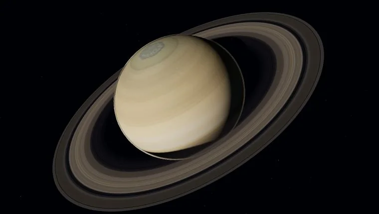
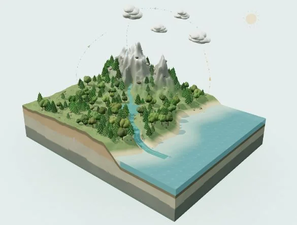
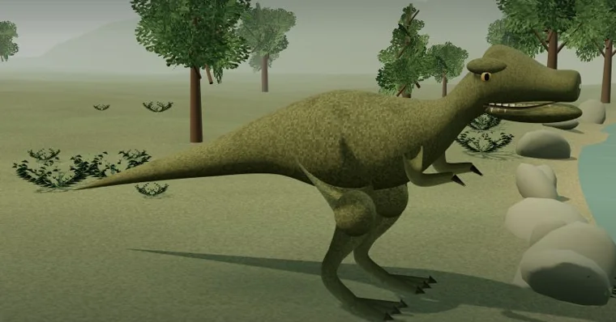
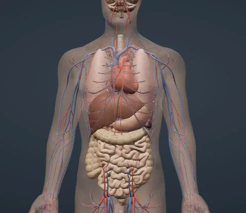
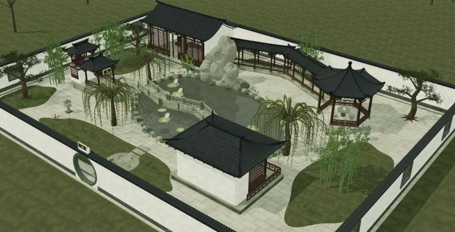
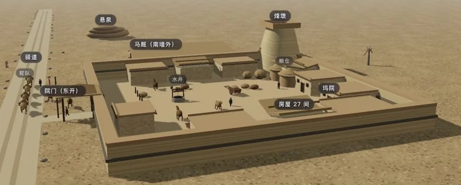
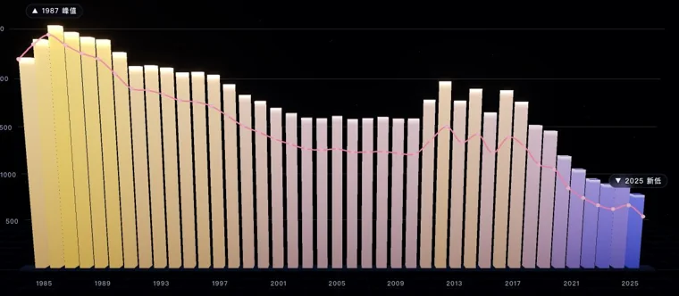

给好奇的小小探索家 HELLO, EXPLORER
世界那么大，
一起探索一下。
从一颗星球，到一滴水。
转动模型、跟着讲解，把一个个「为什么」看明白。
07 个探索主题可以动手的 3D 世界中文语音讲解
CHOOSE YOUR NEXT ADVENTURE
下一站，你想去哪儿？

土星的光环，是什么？
太阳系观察站
转动星球，比较八大行星的大小。
看看不同星球的一年有多长。

NATURE / 01水循环观察站
一滴水会去哪里？从海面升空，变成云和雨，打开地下剖面看看雨水去了哪里。

LIFE / 02恐龙自然博物馆
观察牙齿、角和背板，用自己的身高当尺子，认识恐龙与翼龙的不同本领。

LIFE / 03身体里的生命之河
和一滴血一起旅行，认识心脏和肺。切换器官、血管与骨骼，看看身体怎样工作。

CULTURE / 04江南园林
走过曲桥、绕过假山，看看一扇月洞门，怎样框住一幅会变化的风景。

CULTURE / 05悬泉置 · 丝路驿站
古人怎么把消息送到远方？走进戈壁上的汉代驿站，寻找汉简、马厩与驼队。

DATA / 06把人口变成一幅图
柱子为什么有高有低？从 1985—2025 年的出生人口图中，练习发现数据的变化。
这个问题，还在探索的路上。
换一个词试试，或者回到全部主题，发现新的方向。
GOOD QUESTIONS OPEN NEW WORLDS
也可以，从一个「为什么」开始。
给一起探索的大人不用急着给答案，先陪孩子发现。
01
先问一个问题
从孩子正在好奇的事出发，每次选一个主题就好。
02
一起动手观察
转一转模型、换个视角、试着改变条件，再听听讲解。
03
说说自己的发现
鼓励孩子用自己的话解释，也欢迎留下新的问题。